1. 地球温暖化対策
製造工程や室内空調設備への熱源供給に使用している石炭及び重油ボイラーを、高効率の都市ガスボイラー（貫流ボイラー）に更新することで、エネルギー使用量とCO2排出量の削減に努めています。 この活動は国内クレジット認証委員会の認証を受けており、削減されたCO2排出量は、国内の排出権取引に活用されています。
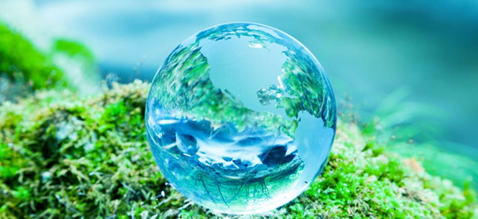
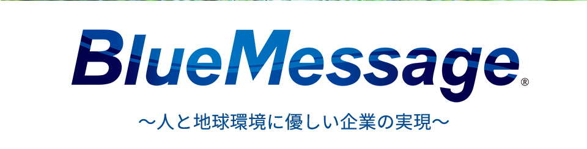
温暖化をはじめ地球規模で様々な環境問題が深刻化している今日、地球環境保全と持続可能な循環型社会の実現に向けた取り組みは、企業に課せられた重要な経営課題のひとつになります。KB セーレンは社会の一員として持続的な発展（サスティナビリティ）を遂げていくために、CSR活動（企業の社会的責任）の一貫として環境に関わる国内外の法令遵守はもとより、自主的・積極的な環境保全活動を進める観点から令和元年を当社における環境対応元年とし、BlueMessageとして社会に発信し、「環境負荷低減」と「循環型社会の実現」に取り組んでまいります。
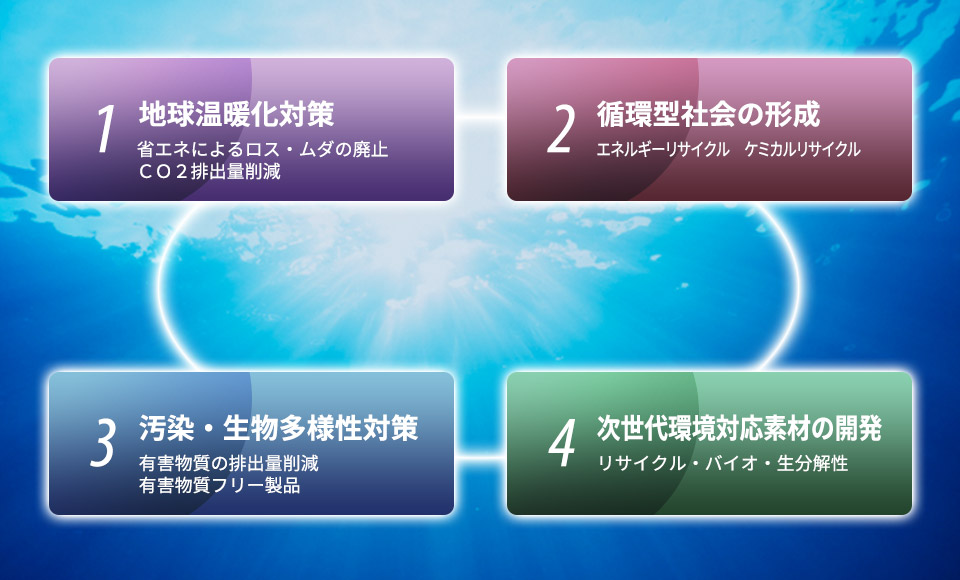
製造工程や室内空調設備への熱源供給に使用している石炭及び重油ボイラーを、高効率の都市ガスボイラー（貫流ボイラー）に更新することで、エネルギー使用量とCO2排出量の削減に努めています。 この活動は国内クレジット認証委員会の認証を受けており、削減されたCO2排出量は、国内の排出権取引に活用されています。
排出された廃棄物を可能な限り大切な資源として再生・再利用することによる循環型社会を目指したリサイクルの推進に努めています。
製品の開発、生産、流通、消費、廃棄にいたるあらゆる段階において環境保全に対応。生産する殆どの繊維（原糸）において、「OEKO-TEX® STANDARD 100」の認証を受けており、有害な化学物質を含有しない製品作りに取り組んでいます。
人と地球にやさしい企業の実現に向けて、環境に配慮した素材を開発していきます。
廃ペットボトルから生まれたCleanCircle®は、品質にばらつきの少ない安定品質で、かつ従来のポリエステル繊維と同じように使用することが可能です。
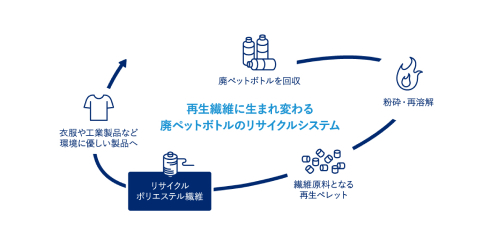
サトウキビなどの植物由来原料から生まれたGeoCircle®は、生分解性・難燃性・抗菌性をもち、最終的には土にかえる環境にやさしい繊維です。
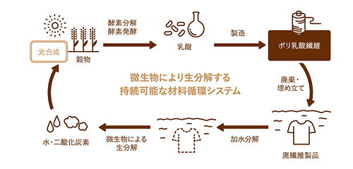
通常のポリエステルに生分解性を付与したMildGeoCircle®は、物性等は従来のポリエステルと同等を保ちながら、土中約1260日でおよそ95%分解する環境に配慮した繊維です。
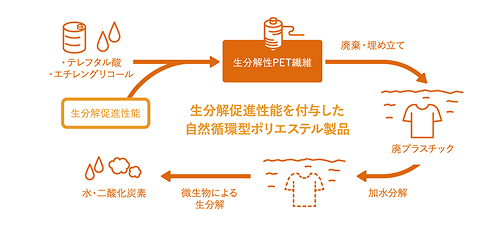
植物由来原料から生まれたバイオ繊維であるBiosVision®は、原料精製時に石油由来原料に比べ、CO₂排出量を削減しています。
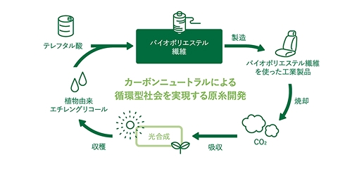
低温・常圧で染色ができるため、エネルギー使用量低減・CO₂排出量削減効果があることはもちろん、高温染色に不向きな繊維と組み合わせて染色することも可能です。
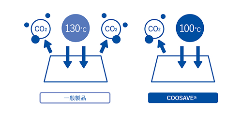
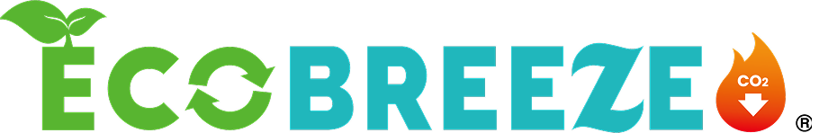
焼却時、炭化促進により炭化物(灰)を多く生成(灰を閉じ込める)させて大気中に放出されるCO₂の発生量を抑制することで、通常ポリエステルと比較してCO₂発生量を約30%低減します。
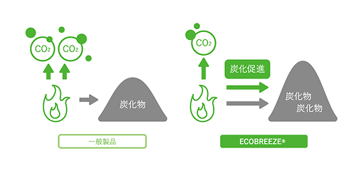
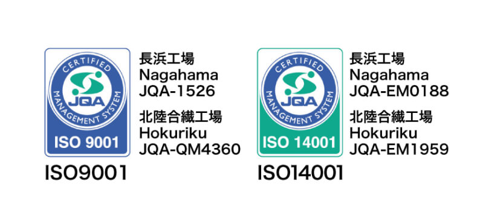
品質保証に関する国際規格「ISO 9001」 環境マネジメント国際規格「ISO 14001」を取得。
また省エネルギー、産業廃棄物の削減など、
事業活動を通じ環境保全の確保に努めています。
KBセーレンはRCS認証を取得しています。当認証基準はリサイクル含有物を検証し、供給源から最終製品まで追跡し認証します。これからも環境に配慮した商品開発・技術 開発を積極的に進め、サステナビリティ製品の提供を通して、広く社会に貢献してまいります。